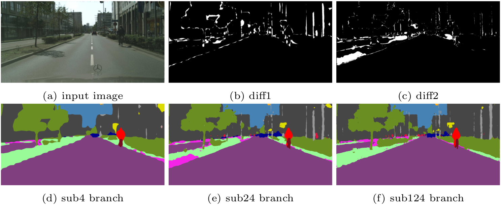

Hengshuang Zhao1 Xiaojuan Qi1 Xiaoyong Shen2 Jianping Shi3 Jiaya Jia1,2
1 The Chinese Univeristy of Hong Kong 2 Tencent Youtu Lab 3 SenseTime Research
|
Network architecture of ICNet. ‘CFF’ stands for cascade feature fusion detailed in Sec. 3.3. Numbers in parentheses are feature map size ratios to the full-resolution input. Operations are highlighted in brackets. The final ×4 upsampling in the bottom branch is only used during testing. |
Abstract
We focus on the challenging task of real-time semantic segmentation in this paper. It finds many practical applications and yet is with fundamental difficulty of reducing a large portion of computation for pixel-wise label inference. We propose an image cascade network (ICNet) that incorporates multi-resolution branches under proper label guidance to address this challenge. We provide in-depth analysis of our framework and introduce the cascade feature fusion unit to quickly achieve high-quality segmentation. Our system yields real-time inference on a single GPU card with decent quality results evaluated on challenging datasets like Cityscapes, CamVid and COCO-Stuff.
Download
| "ICNet for Real-Time Semantic Segmentation on High-Resolution Images"
Hengshuang Zhao, Xiaojuan Qi, Xiaoyong Shen, Jianping Shi, Jiaya Jia. European Conference on Computer Vision (ECCV), 2018. |
Comparison
|
Comparison of semantic segmentation frameworks. (a) Intermediate skip connection used by FCN [1] and Hypercolumns [21]. (b) Encoder-decoder structure incorporated in SegNet [3], DeconvNet [4], UNet [33], ENet [8], and step-wise reconstruction & refinement from LRR [34] and RefineNet [11]. (c) Multi-scale prediction ensemble adopted by DeepLab-MSC [2] and PSPNet-MSC [5]. (d) Our ICNet architecture. |
Performance
|
Inference speed and mIoU performance on Cityscapes [7] test set. Methods involved are PSPNet [5], ResNet38 [6], DUC [10], RefineNet [11], FRRN [12], DeepLabv2-CRF[13], Dilation10 [14], DPN [15], FCN-8s [1], DeepLab [2], CRF-RNN [16], SQ [9], ENet [8], SegNet [3], and our ICNet. |
Time spent on PSPNet50 with dilation 8 for two input images. Roughly running time is proportional to the pixel number and kernel number. |
Visualization
|
Visual prediction improvement of ICNet in each branch on Cityscapes dataset. |
|  |
|
Visual prediction improvement of ICNet. White regions in 'diff1' and 'diff2' denote prediction difference between 'sub24' and 'sub4', and between 'sub124' and 'sub24' respectively. |
Video
Demo video processed by ICNet on cityscapes dataset with TitanX Maxwell:
Last update: Aug. 18, 2018